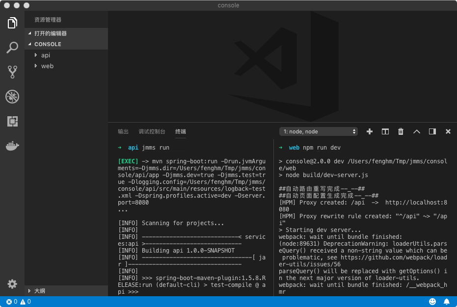

WEB开发指南
Since 0.5.2 (Experimental)
从0.5.2开始，jmms支持整合mvue框架进行web界面开发；mvue是基于vue.js的纯前端UI开发框架，可以无缝整合jmms api进行数据管理和控制台类界面的快速开发。
下面以一个简单的示例快速介绍如何整合jmms后端API和mvue框架进行开发。
创建工程
安装jmms命令行到0.5.2或以上版本
$ npm install -g jmms@0.5.2
创建console目录
$ mkdir console
$ cd console
创建api工程
$ jmms create api
Creating project...
.......
Project created at '***/console/api' successfully!
创建web工程
$ jmms create web
Create web project from github:bingo-oss/mvue@master...
Downloading mvue.zip
[============================================>] 100.0% (67.22 kB/s)
Web project created success!!!
cnpm installing....
........
Node modules installed!!!
创建工程后会自动执行cnpm install或npm install，这个过程较慢，如果失败可重新执行
进入开发模式
启动api工程
$ cd api
$ jmms run
启动web工程
$ cd web
$ npm run dev
成功启动后访问http://localhost:9596(web工程的默认端口)查看是否正常显示界面。
推荐使用vscode进行开发,如下图所示

快速生成增删改查
在api工程创建实体Student
app/entities/Student.json
{
"title": "学生",
"description": "学生",
"fields": {
"id": "title 标识 uuid",
"name": "title 姓名 varchar(150) required sortable filterable meaning title",
"stuNo": "title 学号 varchar(50) required filterable sortable ",
"sex": "title 性别 varchar(10) required sortable ",
"age": "title 年龄 integer(10) sortable",
"createdAt": "title 创建时间 timestamp required value now filterable sortable",
"updatedAt": "title 更新时间 timestamp required value now filterable sortable"
},
"generates": "*+"
}
保存后访问http://localhost:9596/#/entities/student/list可以看到一个默认生成的增删改查功能。
打包部署
修改正式环境的数据库配置
这里为了测试简单，使用了文件数据库，真实环境需要另外配置
修改api/app/config.json的db部分配置
{
"db": {
"migrate" : true,
"console" : true,
"type" : "h2",
"file" : "./target/db",
"username" : "root",
"password" : "1"
}
}
把api和web进行整合打包
$ cd api
$ mvn clean package -Pweb
打包前先停止运行
api，需要加上-Pweb才会打包web工程的内容
验证运行部署包
$ cd target
$ java -jar api-1.0.0-SNAPSHOT.jar
启动成功后访问http://localhost:8080/#/entities/student/list进行验证。
进一步开发
请查看mvue文档进行下一步开发。